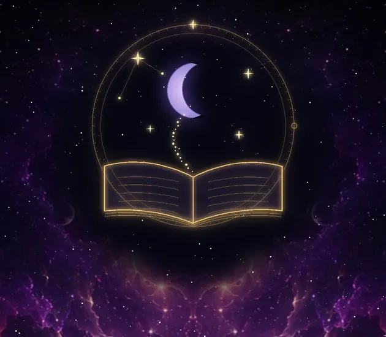

Qual é o meu signo? Seu signo solar e lunar pela data de nascimento
Seu signo do zodíaco é o signo em que o Sol estava quando você nasceu. Na maior parte do ano a data basta, mas não no dia em que o Sol passa para o signo seguinte, e a Lua muda de signo a cada dois ou três dias. Verificamos o dia inteiro e avisamos quando a sua hora de nascimento decide.
Qual é o meu signo? Calculadora do signo solar e lunar
Digite sua data de nascimento para ver seu signo do zodíaco (signo solar) e seu signo lunar, com o elemento e a modalidade de cada um. Se você sabe sua hora de nascimento, inclua: no dia em que o Sol ou a Lua mudou de signo, quem decide é a hora.
Quer um aviso quando um planeta entrar no seu signo ou sair dele, ficar retrógrado ou uma Lua Nova ou Cheia cair no seu signo? Esses avisos chegam só no app: instale pelo Google Play.

O que a calculadora mostra
- Seu signo do zodíaco: o signo em que o Sol estava na sua data de nascimento.
- Seu signo lunar: o signo em que a Lua estava.
- O elemento (fogo, terra, ar ou água) e a modalidade (cardinal, fixo ou mutável) de cada signo.
- Se o Sol ou a Lua mudou de signo nesse dia: os dois signos e um aviso de que a sua hora de nascimento decide.
Por que às vezes a data não basta
O Sol entra em cada signo por volta do dia 20 do mês, alguns dias antes ou depois, e a cada ano em uma hora diferente, por isso as datas dos signos das revistas são só aproximadas. A Lua anda muito mais rápido e entra em um signo novo quase um dia sim, outro não. Sem a hora de nascimento, verificamos o dia inteiro e só indicamos um signo se ele valeu do começo ao fim. Com hora e cidade, calculamos o momento exato no fuso horário dessa cidade, horário de verão incluído.
Seu ascendente e o resto do seu mapa
O ascendente muda mais ou menos a cada duas horas, por isso precisa da hora e do local exatos de nascimento. O My Cosmic Code calcula no app, junto com cada planeta por signo e casa, os aspectos entre eles e a roda completa do mapa natal.
Privado desde o início
No app: sem anúncios, sem análise, sem rastreadores, sem conta. Seus dados de nascimento, seu mapa e seu diário ficam só no seu aparelho, e você pode exportá-los ou apagá-los no app.
Perguntas
Qual é o meu signo?
O signo em que o Sol estava quando você nasceu, também chamado de signo solar. Digite sua data de nascimento acima; se você nasceu no dia em que o Sol mudou de signo, inclua também a hora.
Nasci numa cúspide. Qual é o meu signo?
Um ou outro, nunca os dois: no minuto em que você nasceu, o Sol ainda estava no primeiro signo ou já estava no seguinte. A mudança se desloca até um dia de um ano para outro, então é a sua hora de nascimento que decide.
Qual é o meu signo lunar?
O signo em que a Lua estava quando você nasceu. A Lua muda de signo a cada dois ou três dias, então em muitas datas é preciso a hora de nascimento para saber.
O que são elementos e modalidades?
Duas formas de agrupar os doze signos. Cada signo tem um dos quatro elementos (fogo, terra, ar, água) e uma das três modalidades (cardinal, fixo, mutável). Áries, por exemplo, é um signo de fogo cardinal.
Este é o meu signo védico?
Não. Este é o zodíaco ocidental (tropical), medido pelas estações do ano. A astrologia védica mede pelas estrelas, cerca de 24 graus atrás, por isso o seu signo védico costuma ser o anterior. Nos Horóscopos do app você vê também o seu signo lunar védico.
Experimente também
 Mapa NatalSeu projeto cósmico
Mapa NatalSeu projeto cósmico Calendário LunarCiclos e fases da Lua
Calendário LunarCiclos e fases da Lua NumerologiaDecifre o poder dos números
NumerologiaDecifre o poder dos números CompatibilidadeComo os seus mapas se encontram
CompatibilidadeComo os seus mapas se encontram HoróscoposChinês, japonês e védico
HoróscoposChinês, japonês e védico Céu NoturnoO céu real, ligado ao seu mapa
Céu NoturnoO céu real, ligado ao seu mapa Planetas hojeLua, planetas e retrógrados agora
Planetas hojeLua, planetas e retrógrados agora Carta do DiaPergunte ao Olhar Velado
Carta do DiaPergunte ao Olhar Velado
Dicionário dos sonhosTodos os símbolos, de A a Z
Mapa astral · Calendário lunar · Numerologia · Compatibilidade dos signos · Horóscopo chinês e védico · Mapa do céu · Meu signo · Planetas hoje · Carta do Dia · Dicionário dos sonhos